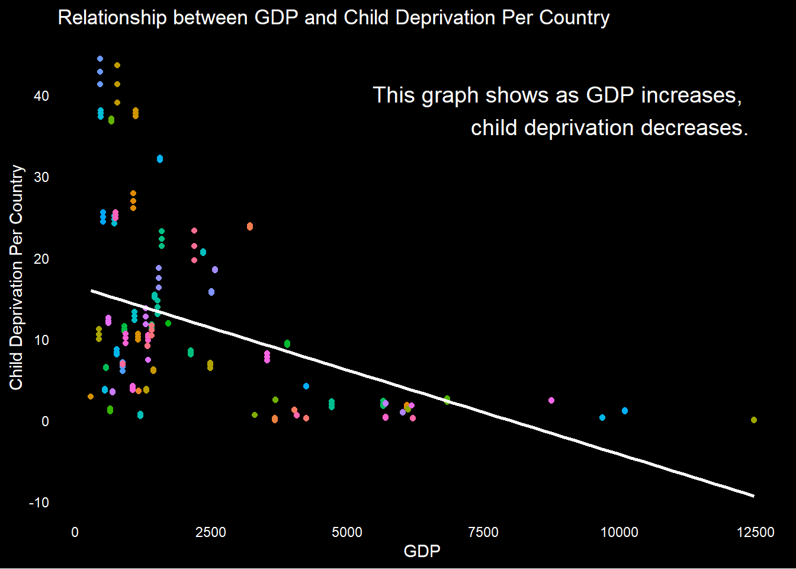
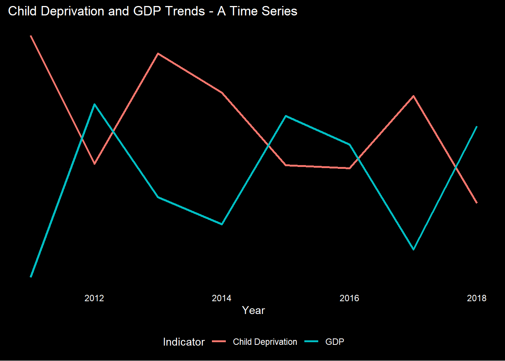

NULL
Children experience poverty distinctly from adults. Their needs, in order to survive and thrive, are different; their dreams and hopes are different. These necessities ought to be supported and taken care of by adults, not by the children themselves.
The definition of deprivation is the lack of at least two of the following fundamental elements in the life of a child:
NULLThe map and subsequent charts clearly illustrate that the most severe cases of child deprivation are predominantly located in Africa and the Middle East. The bar chart corroborates this geographic trend, emphasizing the ongoing prevalence of the issue. Nonetheless, the data offers a glimmer of hope, indicating a gradual reduction in the instances of child deprivation, which signals positive progress in addressing this critical issue.


This graph effectively underscores the inverse correlation between GDP and deprivation, emphasizing the declining trend in deprivation over time. It serves as a stark reminder of the pressing need to intensify efforts to alleviate poverty, particularly in developing nations. Evidently, nations with higher GDP per capita exhibit lower levels of child deprivation. The trendline unmistakably illustrates this inverse correlation. Now, let’s delve deeper into this compelling connection.

It’s hardly surprising that this problem is most prevalent in the developing world. Indicators like GDP, military expenditure, and education levels all reflect the extent of deprivation experienced by children within a country. Addressing this issue demands greater efforts, particularly from more developed nations, to mitigate its impact.
As a global community, it is incumbent upon us to take swift and decisive action through appropriate channels to eradicate child deprivation entirely. Fulfilling this obligation is not only a moral imperative but also crucial for creating a world where every child has the opportunity to thrive.
Child deprivation remains a prevalent concern across numerous countries worldwide, with a notable concentration in Africa, Southern Asia and The Middle East. However, it is imperative to recognize that this issue transcends geographical boundaries, impacting communities globally.
Encouragingly, there is a gradual decline in instances of child deprivation, with factors such as increasing GDP per capita playing a pivotal role in driving this positive trend.
As societies continue to progress, there is a collective aspiration towards a future where child deprivation becomes a relic of the past, fostering a world where every child can thrive.